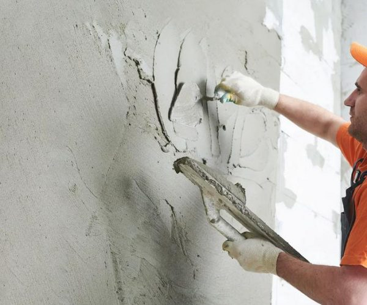
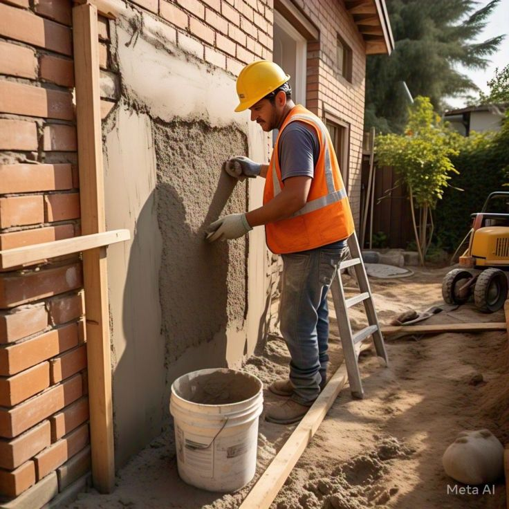
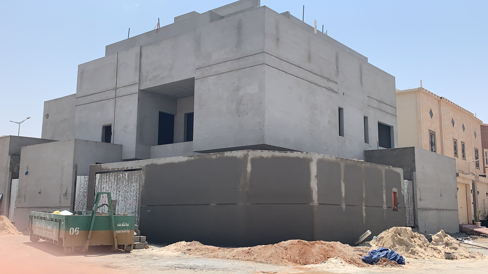
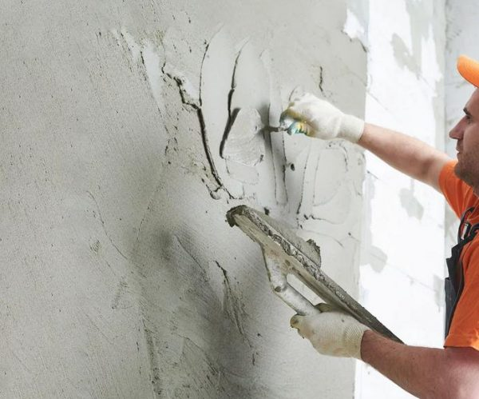
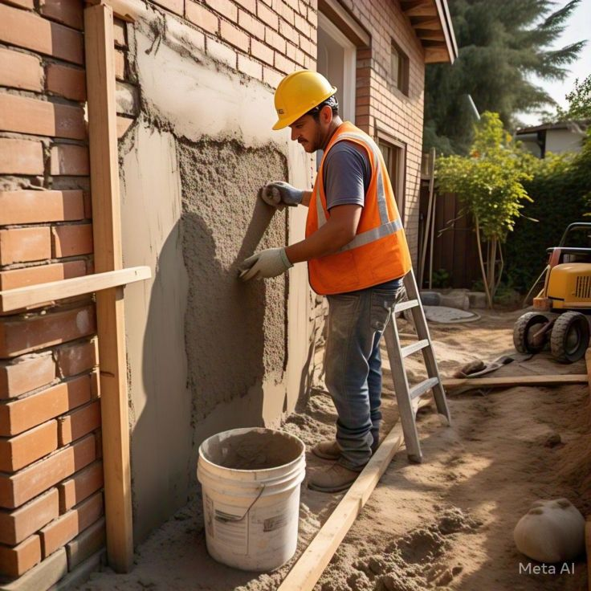
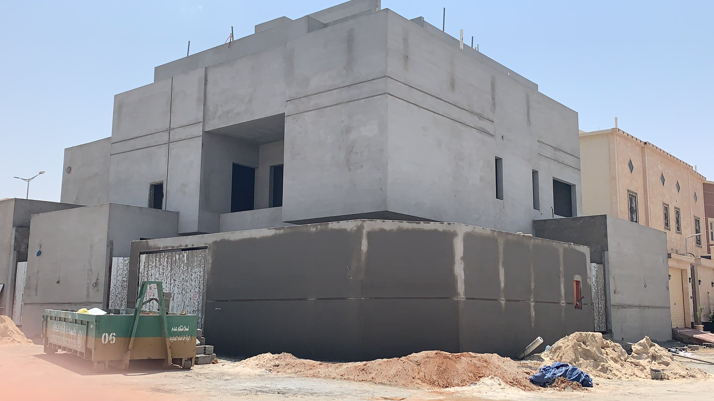
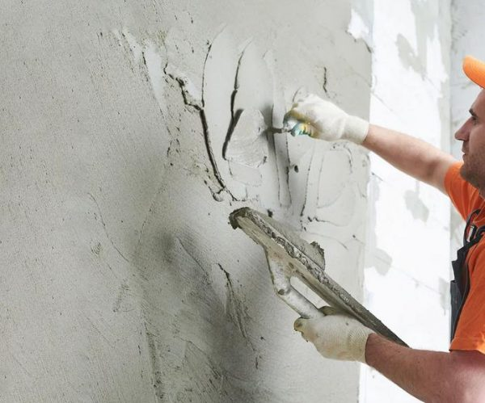
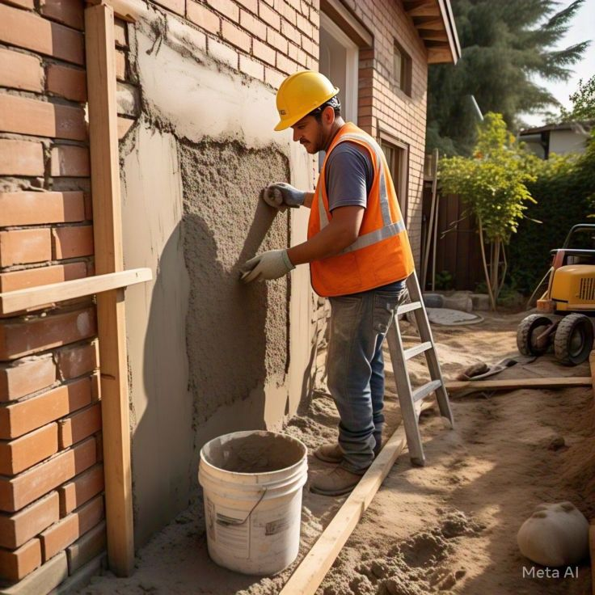
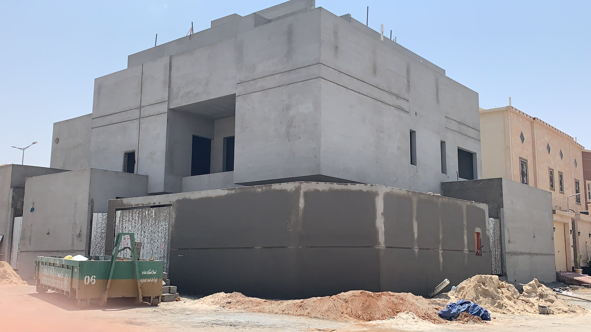
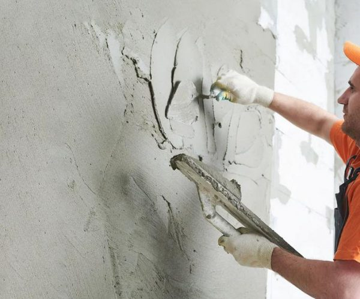
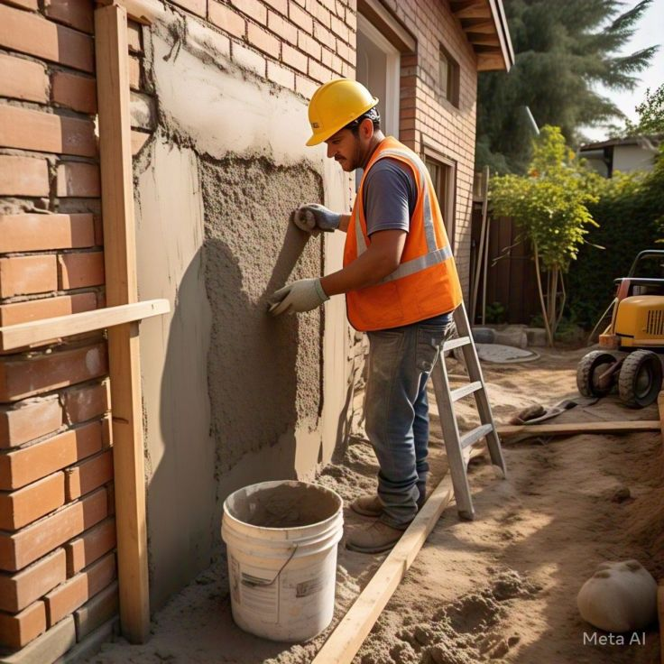
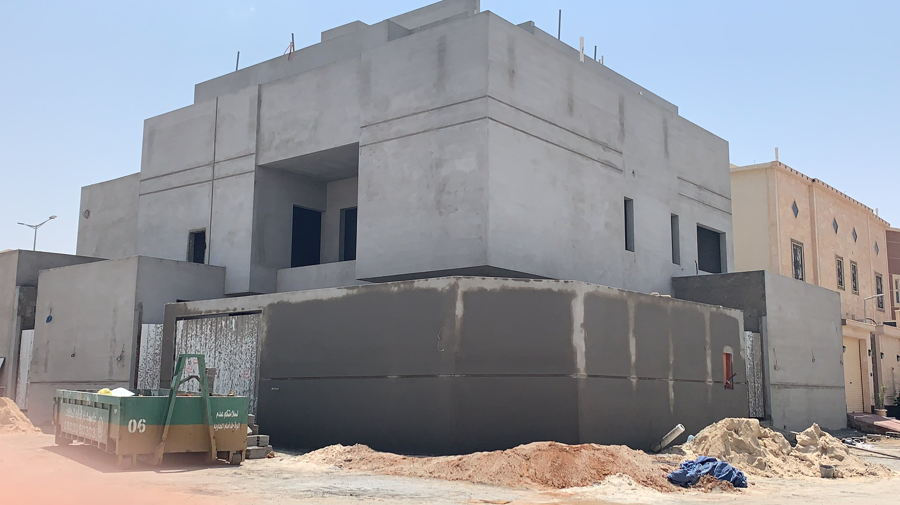
تُعد بطحاء الرياض من أهم مواد البناء الأساسية التي توفرها مؤسسة رمال الصحراء بأعلى معايير الجودة والنقاء. تتميز بطحاء الرياض بلونها الطبيعي وملمسها الناعم، مما يجعلها الخيار الأمثل للعديد من التطبيقات الإنشائية، خاصةً أعمال التلييس والمحارة.
نحن نضمن لك توفير بطحاء الرياض الخالية من الشوائب والمواد العضوية، والتي تتم معالجتها بعناية لضمان تجانسها وقوتها عند الخلط مع المواد الأخرى. سواء كنت تقوم ببناء مشروع سكني، تجاري، أو صناعي، فإن بطحاء الرياض لدينا توفر الأساس المتين والموثوق الذي تحتاجه.
اعتمد على مؤسسة رمال الصحراء لتزويدك بأفضل أنواع بطحاء الرياض التي تضمن لك إنجاز مشاريعك بكفاءة وجودة عالية. فريقنا جاهز للإجابة على جميع استفساراتك وتلبية طلباتك الخاصة. لا تتردد في التواصل معنا للحصول على استشارة مجانية أو طلب عرض سعر.